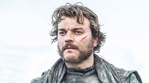

Balon Greyjoy
Balon Greyjoy is the head of House Greyjoy of Pyke and is the Lord of the Iron Islands. The captain of the Great Kraken, he is a follower of the Old Way of the ironborn and desires to bring them back to prominence. In 289 AC he proclaimed their independence from the Iron Throne, but Greyjoy's Rebellion was defeated by King Robert I Baratheon's forces. In the television adaptation Game of Thrones, Balon is played by Patrick Malahide.
Balon had always been thin, but by 299 AC he is gaunt with a hard face. He has hard black eyes with long grey hair flecked with white that hangs past the small of his back. Balon has a personality to match his people: stubborn, fearless, and quarrelsome. He is uncompromising even when it comes to his own family, and his faith in the Drowned God and the Old Way is absolute.
Euron Greyjoy
Euron Greyjoy, known as Crow's Eye and Euron Crow's Eye, is a member of House Greyjoy and is the eldest of Lord Balon Greyjoy's younger brothers. In the television adaptation Game of Thrones he is portrayed by Pilou Asbæk. Euron is captain of the Silence, a ship crewed entirely by mutes whose tongues he ripped out. Euron's personal coat-of-arms is a red eye with a black pupil beneath a black iron crown supported by two crows.
Euron is pale and handsome with black hair and a dark beard. He wears a patch over his left eye, and is nicknamed Crow's Eye. According to Euron's nephew, Theon Greyjoy, the patch conceals a "black eye shining with malice". His right eye is as blue as summer sky and is regarded as his "smiling eye". In addition, his lips are a pale blue, due to his propensity to drink shade of the evening.
Euron is a wildly unpredictable man, known for his delight in playing vicious mind games and waging psychological warfare on anyone around him. He is hated by his brothers for this reason. A skilled warrior and manipulator, Euron is cunning, shrewd and ruthless. Despite his dangerous and mercurial nature Euron has little trouble in drawing men to his service, especially freaks and fools. While most ironborn captains keep the lion's share of plunder, Euron takes almost nothing for himself.
Theon Greyjoy
Introduced in 1996's A Game of Thrones, Theon is the son of Balon Greyjoy from the kingdom of Westeros. He subsequently appeared in A Clash of Kings (1998) and A Dance with Dragons (2011). He is one of the major third person points-of-view through which Martin narrates both books.
Theon Greyjoy is the heir apparent and only living son of Balon Greyjoy. Theon is the narrator for a total of thirteen chapters in the second and fifth novels, A Clash of Kings and A Dance with Dragons.
Ten years before the events of the series, Theon was taken hostage by Eddard Stark. He would have been executed had his father Balon displeased King Robert Baratheon. Theon was raised at Winterfell with the Stark children and developed a close friendship with Robb Stark. As an adult, Theon was arrogant, cocky, and proud until being imprisoned by Ramsay Snow, who is the eldest and bastard son of Roose Bolton. During the imprisonment, Ramsay severely tortured Theon physically and psychologically before emasculating him and mockingly changing his name to "Reek".
Yara Greyjoy
Queen Yara Greyjoy is the daughter of Balon Greyjoy and older sister and only surviving sibling of Theon Greyjoy. She was raised at Pyke, the stronghold of House Greyjoy. Yara is a fierce warrior and commands her own longship, the Black Wind.
After the assassination of her father, Yara lays claim to the Iron Islands, but when the ironborn choose her uncle Euron, who murdered Balon, as their next king, she and Theon flee with a portion of the Iron Fleet and their loyal followers. Yara and Theon become allies with Daenerys Targaryen. Yara is then captured by her uncle when he attacks the Targaryen fleet, though she is later freed by Theon and their remaining loyalists. Intent on claiming the Salt Throne, Yara sails what remains of her army to retake the Iron Islands.